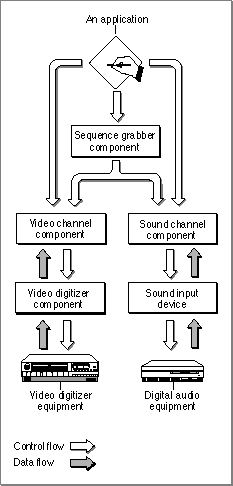

About Sequence Grabber Channel Components
Sequence grabber components allow applications to obtain digitized data from sources that are external to a Macintosh computer. For example, applications can use a sequence grabber component to record video data from a video digitizer or a video disc player. The application can then request that the sequence grabber component store the captured video data in a QuickTime movie. In this manner users can acquire movie data from various sources. Applications can also use sequence grabber components to obtain and display data from external sources, without saving the captured data in a movie. For more information about sequence grabbers, see the chapter "Sequence Grabber Components" in this book.Sequence grabber components use sequence grabber channel components (or, simply, channel components) to obtain data from audio- or video-digitizing equipment. These components isolate the sequence grabber component from the details of working with the various types of data that can be collected. The functionality provided by a sequence grabber component depends upon the services provided by sequence grabber channel components. The channel components, in turn, may use other components to interact with the digitizing equipment. For example, the video channel component supplied by Apple uses a video digitizer component. Figure 6-1 shows the relationship between these components and an application.
Figure 6-1 Relationships of an application, a sequence grabber component, and channel components

Sequence grabber panel components augment the capabilities of sequence grabber components and sequence grabber channel components by allowing sequence grabbers to obtain configuration information from the user for a particular digitizing source. Sequence grabbers present a settings dialog box to the user whenever an application calls the
SGSettingsDialogfunction (see the chapter "Sequence Grabber Components" for more information about this sequence grabber function). Applications never call sequence grabber panel components directly; application developers use panel components only by calling the sequence grabber component.Note that sequence grabber channel components may support all of the functions that are supported by sequence grabber panel components. For example, sequence grabbers obtain settings information from a channel component by calling the channel component's
SGPanelGetSettingsfunction. See the chapter "Sequence Grabber Panel Components" in this book for more information about the sequence grabber configuration dialog box; the relationship between sequence grabbers, sequence grabber channels, and sequence grabber panels; and the functional interface supported by sequence grabber panel components.If you are developing digitizing equipment and you want to allow applications to use the services of your equipment with a sequence grabber component, you should create an appropriate video digitizer component or sound input device driver. See the chapter "Video Digitizer Components" in this book for a description of video digitizer components. See Inside Macintosh: More Macintosh Toolbox for information about sound input device drivers.
If you are developing equipment that provides a new type of data to QuickTime, you should develop a new sequence grabber channel component. See the next section, "Creating Sequence Grabber Channel Components," for more information about creating sequence grabber channel components.